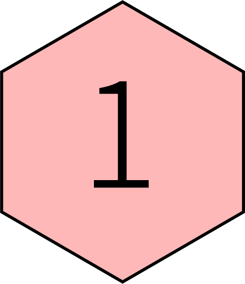
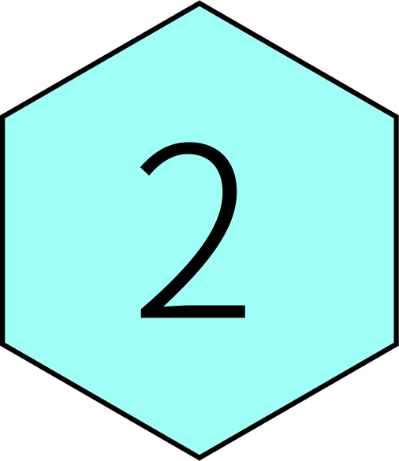
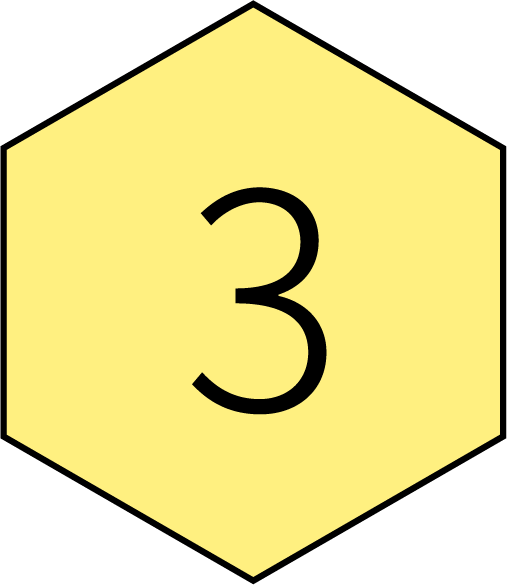

这是标题
next
last



1.如果有一整个空闲的周日，你会怎么安排？
A.没有任何安排，随性就好
B.会规划几件简单的事情，完成之后就随性度过
C.会认真安排规划，尽量不浪费时间
2.你能够想象到多远后的自己？
A.一周之后
B.一个月后
C.一年之后
3.朋友圈有人习惯性发布负能量动态，你会觉得？
A.人之常情，这也是一种发泄方式
B.会影响自己的心情
C.想要去屏蔽ta
4.你更会？
A.关注身边人的动向
B.关注自己爱豆或喜欢的人的动向
C.不是很关心别人的动向
5.截止日期快到的时候，你会？
A.能做多少算多少
B.有紧迫感，赶紧开始规划进度表
C.没有办法专注于此
6.走在路上遇见不太熟悉的人？
A.尽量避免迎面撞见的可能
B.如果对方主动打招呼就会热情回应
C.会主动Say嗨
6.对于“同学会”这类聚会的态度？
A.会主动组织联系
B.如果有人想组织好，会愿意参加
C.不是很想参加